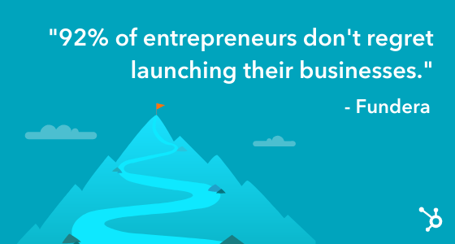

Entrepreneurship Statistics
Entrepreneurship has been on a steady incline for the past 19 years. After falling during the U.S. recession between 2008 and 2011, entrepreneurship as a career path has rebounded and (despite the 2020 COVID-19 pandemic) is now back to pre-recession growth rates.
Here are some other interesting entrepreneurship statistics:
-
U.S. small businesses employ 60.6 million people.
- Nearly 90% of early-stage entrepreneurs plan to create jobs for others.
- 63% of small business owners say their businesses are profitable.
- The average amount of startup capital needed by a small business owner is $10,000.
In the United States, 12.3 million businesses are owned by women, 5.2 million are owned by people of color, and 2.52 million are majority-owned by veterans.

Entrepreneurship Quotes
-
A year from now you will wish you had started today. — Karen Lamb
- Success is not the key to happiness. Happiness is the key to success. If you love what you are doing, you will be successful. — Albert Schweitzer
- Dream big. Start small. But most of all, start. — Simon Sinek
- Be patient with yourself. Self-growth is tender, it's holy ground. There's no greater investment. — Stephen Covey
- My best advice to entrepreneurs is this: Forget about making mistakes, just do it. — Ajaero Tony Martins
- Ambition is the steam that drives men forward on the road to success. Only the engine under full steam can make the grade. — Maxi Foreman
- The only way to do great work is to love what you do. — Steve Jobs
- The best way to predict the future is to create it. — Peter Drucker
- One of the huge mistakes people make is that they try to force an interest on themselves. You don't choose your passions; your passions choose you. — Jeff Bezos
- Ambition is the steam that drives men forward on the road to success. Only the engine under full steam can make the grade. — Maxi Foreman
- Waiting for perfect is never as smart as making progress. — Seth Godin
- Entrepreneurship is at the core of the American dream. It's about blazing new trails, about believing in yourself, your mission, and inspiring others to join you in the journey. What sets [entrepreneurs] apart is the will, courage and sometimes recklessness to actually do it. — Derek Hutson